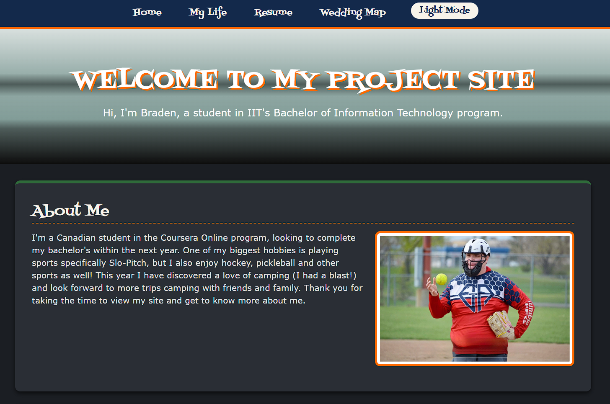
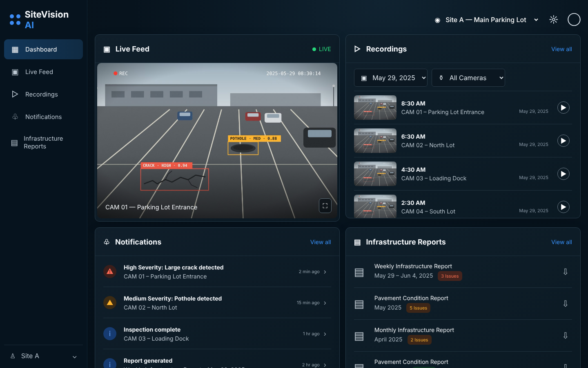

California Lutheran University
Thousand Oaks, California
Edmonton, AB
Edmonton, AB
Remote
Thousand Oaks, California
Chicago, Illinois
-
4.0 GPA In Progress
84 of 120 credit hours completed

A four-page personal website built for Fundamentals of Web Development (ITMD 361) at Illinois Institute of Technology. It started as plain HTML and grew each project with CSS styling and JavaScript features, and is published with GitHub Pages.

A group venture project for IPRO: New Tech Ventures at Illinois Institute of Technology. Our team developed SiteVision AI, an AI infrastructure monitoring service that turns regular security cameras into smart monitoring for parking lots, truck yards and distribution centers, and built an HTML prototype of its dashboard.